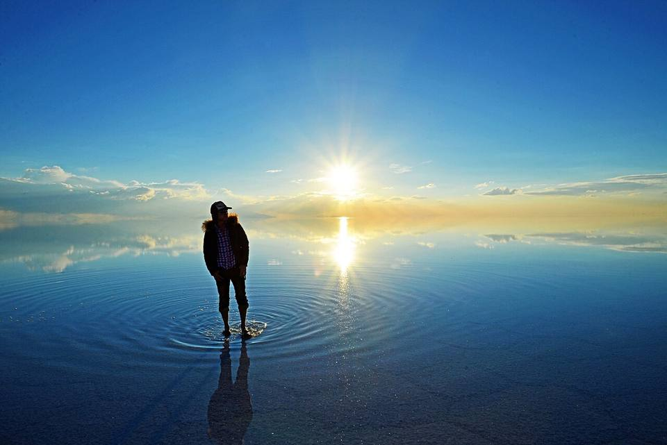
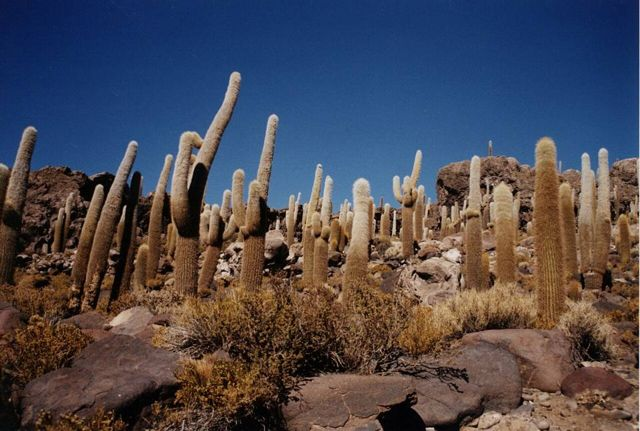
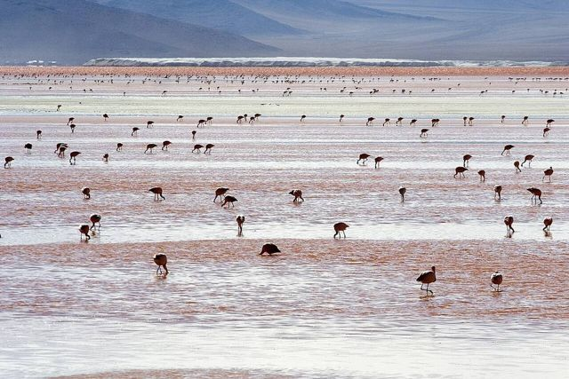
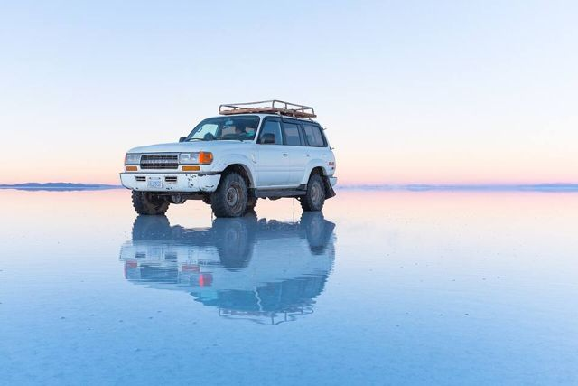
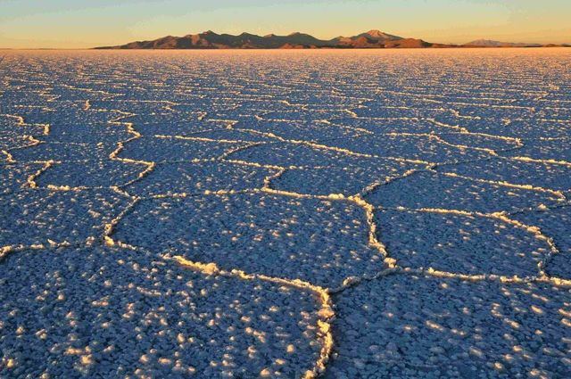
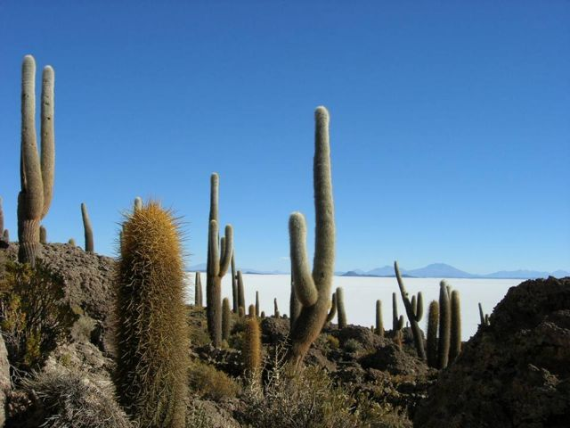
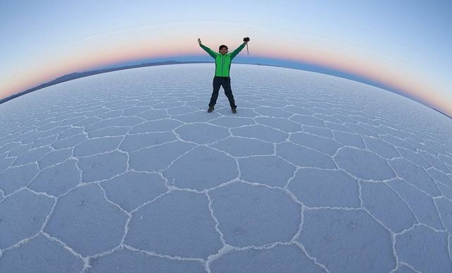
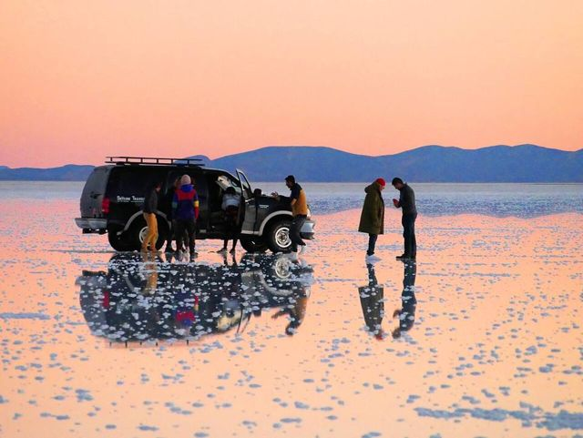

Salar d'Uyuni + Sud Lípez (tour)
Département de Potosí · Altiplano, lacs et salars

Le Salar d'Uyuni, c'est 10 000 km² de sel blanc à perte de vue, un horizon parfaitement plat où l'on perd tous ses repères : on y fait des photos impossibles et, à la saison des pluies, le ciel se reflète comme dans un miroir géant. Le tour continue vers le Sud Lípez, avec des lagunes rouges et vertes pleines de flamants roses, des geysers fumants au lever du soleil et un bain chaud à 4 400 m. Pour beaucoup, c'est le souvenir le plus fort d'un voyage en Bolivie.
3 656 maltitude
1 à 3 jourssur place
Haute altitude. Au-dessus de 3 500 m, le mal des montagnes (soroche) est fréquent. Arrivez progressivement, buvez beaucoup et ralentissez le premier jour.
À faire
- Jour 1 : Colchani, hôtel de sel, Isla Incahuasi et ses cactus géants, photos de perspective
- Jour 2 : lagunes à flamants, Árbol de Piedra, Laguna Colorada
- Jour 3 : geysers Sol de Mañana au lever du jour, bain aux Termas de Polques, Laguna Verde
- Retour à Uyuni (ou sortie vers San Pedro de Atacama au Chili)
À goûter
- Quinoa royalLa meilleure quinoa du monde pousse autour du Salar : en soupe, en galettes ou en accompagnement.
- Viande de lamaViande maigre et goûteuse, souvent grillée ou en « charque » (séchée). Très courante à Uyuni et sur l'Altiplano.
- Soupe de quinoaSoupe chaude de quinoa et légumes, servie dans les refuges et les comedores d'altitude. Parfaite quand il fait froid.
Conseil. Tour en 4x4 de 1 à 4 jours (3 jours conseillé). Jusqu'à 5 000 m, nuits à -10 °C : prendre duvet et vêtements chauds. Saison des pluies (janvier-mars) : effet miroir mais certains secteurs fermés.
À découvrir ici
- Mythes et légendes Tunupa et le SalarLa montagne Tunupa, abandonnée par son époux, pleura en allaitant son enfant : ses larmes et son lait auraient formé le Salar d'Uyuni, qu'elle domine encore au nord.
- Frontière Hito Cajón (vers San Pedro de Atacama)À la fin du tour du Sud Lípez, près de la Laguna Verde : beaucoup de tours déposent les voyageurs ici, avec un transfert vers San Pedro de Atacama (environ 1 h). À réserver avec le tour.
Comment aller à Salar d'Uyuni
Photos de Salar d'Uyuni + Sud Lípez (tour)







.jpg){kind=link}






Autres lieux de la région
 Parc national SajamaLe plus haut sommet de Bolivie (6 542 m), geysers, sources chaudes et lamas.
Parc national SajamaLe plus haut sommet de Bolivie (6 542 m), geysers, sources chaudes et lamas. Curahuara de CarangasLa « chapelle Sixtine de l'Altiplano » : une église en adobe couverte de fresques.
Curahuara de CarangasLa « chapelle Sixtine de l'Altiplano » : une église en adobe couverte de fresques. OruroVille minière de l'Altiplano, célèbre pour son carnaval classé UNESCO. Point de départ du train vers Uyuni.
OruroVille minière de l'Altiplano, célèbre pour son carnaval classé UNESCO. Point de départ du train vers Uyuni. Sources chaudes d'Obrajes et CapachosPiscines d'eau chaude naturelle sur l'Altiplano, à moins d'une heure d'Oruro.
Sources chaudes d'Obrajes et CapachosPiscines d'eau chaude naturelle sur l'Altiplano, à moins d'une heure d'Oruro. Musée ferroviaire de MachacamarcaVieilles locomotives à vapeur et histoire du rail minier, au sud d'Oruro.
Musée ferroviaire de MachacamarcaVieilles locomotives à vapeur et histoire du rail minier, au sud d'Oruro. Lacs Uru Uru et PoopóLacs peu profonds de l'Altiplano, aux portes d'Oruro, où viennent les flamants.
Lacs Uru Uru et PoopóLacs peu profonds de l'Altiplano, aux portes d'Oruro, où viennent les flamants. ChipayaLe village des Uru-Chipaya, l'un des peuples les plus anciens des Andes, aux maisons rondes en terre.
ChipayaLe village des Uru-Chipaya, l'un des peuples les plus anciens des Andes, aux maisons rondes en terre. Salar de CoipasaLe deuxième plus grand désert de sel de Bolivie, sauvage et presque sans visiteurs.
Salar de CoipasaLe deuxième plus grand désert de sel de Bolivie, sauvage et presque sans visiteurs. UyuniVille-base des tours du Salar. Cimetière de trains à la sortie de la ville.
UyuniVille-base des tours du Salar. Cimetière de trains à la sortie de la ville. TupizaPaysages de western : canyons rouges, cactus, et la dernière cavale de Butch Cassidy.
TupizaPaysages de western : canyons rouges, cactus, et la dernière cavale de Butch Cassidy.- CotagaitaPetite ville verte d'une vallée fruitière, sur la route de Potosí à Villazón.
 VillazónLa frontière avec l'Argentine, face à La Quiaca : le passage le plus utilisé par les voyageurs.
VillazónLa frontière avec l'Argentine, face à La Quiaca : le passage le plus utilisé par les voyageurs.